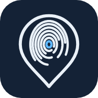

سياسة الخصوصية
من نحن
بصمة منصة حضور وموارد بشرية تستخدمها الشركات لموظفيها. حسابك ينشئه صاحب العمل (الموارد البشرية في شركتك)، وصاحب العمل هو المسؤول عن بياناتك الوظيفية. نحن نشغّل المنصة نيابة عنه.
البيانات التي نجمعها ولماذا
- الموقع الجغرافي الدقيق: عند الضغط على زر تسجيل الحضور أو الانصراف فقط، والتطبيق مفتوح أمامك، للتحقق من وجودك في موقع العمل. لا نتتبع موقعك في الخلفية أبدا، ولا نطلب إذن الموقع في الخلفية.
- معرّف الجهاز: قيمة مشفرة (بصمة SHA-256) تُشتق من معرّف التطبيق على جهازك، لربط حسابك بجهازك ومنع تسجيل الحضور نيابة عن موظف آخر. لا نرسل المعرف الأصلي.
- مفتاح الجهاز ورمزك السري: يُنشأ مفتاح تشفير على جهازك ولا يغادره؛ ويُحفظ رمزك السري المكوّن من 6 أرقام لدى الخادم بصيغة مشفرة غير قابلة للاسترجاع.
- بيانات العمل: ما يسجله صاحب العمل عنك (الاسم، الرقم الوظيفي، القسم، الإجازات، الطلبات، الرواتب حسب صلاحيتك)، لتقديم خدمات الموارد البشرية لك.
- إشارات سلامة الجهاز: هل الجهاز مكسور الحماية أو محاكٍ أو يستخدم موقعا مزيفا، لحماية سجلات الحضور من التلاعب.
ما لا نفعله
- لا نبيع بياناتك ولا نشاركها مع معلنين، ولا يحتوي التطبيق على إعلانات.
- لا نصل إلى جهات الاتصال أو الصور أو الكاميرا أو الميكروفون.
- لا نستخدم بياناتك لأي غرض غير خدمات العمل التي طلبها صاحب العمل.
أين تُحفظ البيانات ومن يراها
تُحفظ بيانات كل شركة في سجلاتها المنفصلة على خدمات Google السحابية، وتنتقل دائما عبر اتصال مشفر (HTTPS). يرى بياناتك من تسمح لهم صلاحياتهم داخل شركتك فقط (أنت، مديرك المباشر في حدود عمله، والموارد البشرية والرواتب).
مدة الاحتفاظ والحذف
يحتفظ صاحب العمل بالسجلات طوال مدة عملك وبعدها بالقدر الذي يلزمه به نظام العمل السعودي. لطلب حذف حسابك أو بياناتك اتبع الخطوات في صفحة حذف الحساب.
حقوقك
وفق نظام حماية البيانات الشخصية في المملكة العربية السعودية، لك حق الاطلاع على بياناتك وتصحيحها وطلب حذفها وطلب نسخة منها. يمكنك الاطلاع على أغلب بياناتك من صفحة "ملفي" داخل التطبيق، وتقديم طلب تعديل بيانات من "الطلبات".
التواصل
للاستفسار عن بياناتك تواصل أولا مع الموارد البشرية في شركتك. وللتواصل مع مشغّل المنصة استخدم البريد الإلكتروني الظاهر في صفحة التطبيق على Google Play.
Privacy Policy (English)
BASMA is an attendance and HR platform that companies use for their employees. Your account is created by your employer (your company's HR), who is responsible for your employment data; we run the platform on their behalf.
Data we collect and why
- Precise location: only when you tap check in or check out, with the app open, to confirm you are at your work location. We never track you in the background and never ask for background location.
- Device identifier: a SHA-256 hash derived from this app's device ID, to bind your account to your device and stop anyone checking in for someone else. The raw identifier is never sent.
- Device key and PIN: an encryption key is created on your device and never leaves it; your 6-digit PIN is stored on the server only as a one-way hash.
- Work data: what your employer records about you (name, employee number, department, leave, requests, pay as your role allows), to provide HR services to you.
- Device integrity signals: whether the device is rooted, an emulator or using mock location, to protect attendance records from tampering.
What we do not do
- We do not sell or share your data with advertisers, and the app shows no ads.
- We do not access contacts, photos, camera or microphone.
- We do not use your data for anything other than the work services your employer requested.
Storage, access and security
Each company's data is kept in its own separate records on Google cloud services and always travels over an encrypted connection (HTTPS). Only people whose role in your company allows it can see your data (you, your line manager within their work, HR and payroll).
Retention and deletion
Your employer keeps records for your employment and afterwards as long as Saudi labour law requires. To ask for your account or data to be deleted, follow the steps on the account deletion page.
Your rights
Under the Saudi Personal Data Protection Law you may access, correct and ask for deletion or a copy of your data. Most of your data is visible under "My file" in the app; corrections can be requested under "Requests".
Contact
For questions about your data, contact your company's HR first. To reach the platform operator, use the e-mail shown on the app's Google Play page.